Dix-neuf exposants étrangers de la seconde Exposition mondiale des Arts
Diecinueve expositores extranjeros de la segunda Exposición Mundial de las Artes
◆ Note de la Rédaction ◆
◆ Nota de la Redacción ◆
Cette rédaction a reçu, sans l'avoir demandé, un volumineux envoi signé Eulalia : des entretiens avec des artistes étrangers qui exposeront à Paris au printemps, des notes sur ce que chacun compte y montrer, et plusieurs caisses de plaques photographiques. L'auteur les a tous rencontrés et interrogés elle-même.
L'envoi compte plus de soixante entretiens. Nous en publions dix-neuf. La rédaction a retenu ceux qui l'intéressaient le plus, et ceux qui présentent des artistes que nos lecteurs connaissent peu : on ne présente à Paris ni M. Puccini, ni M. Kipling, ni Mme Pavlova, ni M. Sorolla, ni Mme Lagerlöf.
Les propos sont rapportés tels qu'ils nous ont été transmis. Ce journal ne prend parti dans aucune des querelles que l'Exposition aura à juger. Les entretiens sont d'Eulalia. Les photographies sont d'elle ou de son élève, M. Rémi Romain ; chacune porte le nom de son auteur.
— La Rédaction
Esta redacción ha recibido, sin haberlo pedido, un voluminoso envío firmado por Eulalia: entrevistas con artistas extranjeros que expondrán en París en primavera, notas sobre lo que cada uno piensa mostrar, y varias cajas de placas fotográficas. La autora los ha visto y entrevistado a todos ella misma.
El envío reúne más de sesenta entrevistas. Publicamos diecinueve. La redacción ha escogido las que más le interesaban, y las que presentan a artistas que nuestros lectores conocen poco: no hace falta presentar en París al señor Puccini, ni al señor Kipling, ni a la señora Pávlova, ni al señor Sorolla, ni a la señora Lagerlöf.
Las palabras se recogen tal como nos han sido transmitidas. Este periódico no toma partido en ninguna de las querellas que la Exposición habrá de juzgar. Las entrevistas son de Eulalia. Las fotografías son suyas o de su discípulo, el señor Rémi Romain; cada una lleva el nombre de su autor.
— La Redacción
Chine
China
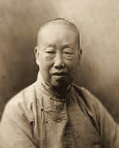
Cliché Rémi Romain
Fotografía de Rémi Romain
Wu Changshuo
69 ans · Shanghaï · Peinture, calligraphie et sceaux
69 años · Shanghái · Pintura, caligrafía y sellos
Doyen des peintres de Shanghaï. Sourd, il répond au pinceau.
Ce que l'on verra. Douze rouleaux de fleurs à l'encre et à la couleur : pruniers, glycines, calebasses, chrysanthèmes, chacun accompagné d'un poème de sa main. Le plus grand, un prunier en fleur, a près de quatre mètres. Dans une vitrine, les sceaux de pierre qu'il grave lui-même ; on les imprimera en rouge devant le public.
« Je n'entends plus les hommes depuis longtemps. Il me reste la pierre : quand je la grave, elle me répond. »
◆ Voir l'œuvre — Wu Changshuo, « Pruniers en fleur », encre sur papier, 1912 (détail).
Decano de los pintores de Shanghái. Sordo, responde con el pincel.
Lo que se verá. Doce rollos de flores a tinta y color: ciruelos, glicinias, calabazas, crisantemos, cada uno acompañado de un poema de su mano. El mayor, un ciruelo en flor, mide cerca de cuatro metros. En una vitrina, los sellos de piedra que él mismo talla; se estamparán en rojo ante el público.
«Hace mucho que no oigo a los hombres. Me queda la piedra: cuando la grabo, me responde.»
◆ Ver la obra — Wu Changshuo, «Ciruelos en flor», tinta sobre papel, 1912 (detalle).
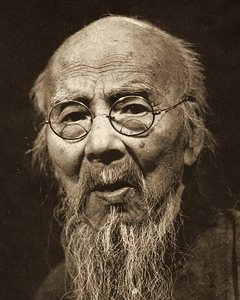
Cliché Rémi Romain
Fotografía de Rémi Romain
Qi Baishi
49 ans · Xiangtan, Hou-nan · Peinture
49 años · Xiangtan, Hunan · Pintura
Menuisier jusqu'à vingt-sept ans ; les lettrés de sa délégation ne lui pardonnent pas l'établi.
Ce que l'on verra. Un album de vingt-quatre feuilles où il n'y a que du petit : des crevettes, des crabes, des poussins, des cigales, une souris devant une lampe à huile. Chaque feuille tient en quelques coups de pinceau, sans esquisse ni repentir. À côté, un paravent de bois qu'il a sculpté dans sa jeunesse.
« Le crabe marche de travers et se croit très avancé. Je n'ai rien dit de personne : j'ai parlé du crabe. »
Carpintero hasta los veintisiete años; los letrados de su delegación no le perdonan el banco de carpintero.
Lo que se verá. Un álbum de veinticuatro hojas donde sólo hay cosas pequeñas: gambas, cangrejos, pollitos, cigarras, un ratón ante una lámpara de aceite. Cada hoja se resuelve en unas pocas pinceladas, sin boceto ni arrepentimiento. Al lado, un biombo de madera que talló en su juventud.
«El cangrejo anda de lado y se cree muy adelantado. No he dicho nada de nadie: he hablado del cangrejo.»
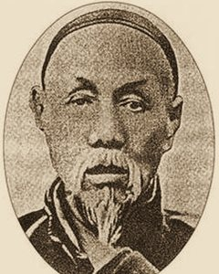
Portrait dessiné
Retrato a dibujo
Lin Shu
61 ans · Fou-tchéou · Littérature
61 años · Fuzhou · Literatura
Il a traduit plus de cent romans d'Europe sans savoir aucune langue étrangère : un assistant raconte, il écrit.
Ce que l'on verra. Ses livres, reliés à la chinoise et ouverts à côté des originaux : La Dame aux camélias, Oliver Twist, Ivanhoé, Robinson Crusoé. Chaque après-midi, il lira une page de Dumas en chinois classique, et un interprète la remettra en français, afin que le public juge de ce qui a fait le voyage.
« J'ai pleuré en écrivant la mort de Marguerite. Si l'on me dit à Paris qu'il ne fallait pas pleurer, je recommencerai tout. »
Ha traducido más de cien novelas de Europa sin saber ninguna lengua extranjera: un ayudante cuenta, él escribe.
Lo que se verá. Sus libros, encuadernados a la china y abiertos junto a los originales: La dama de las camelias, Oliver Twist, Ivanhoe, Robinson Crusoe. Cada tarde leerá una página de Dumas en chino clásico, y un intérprete la devolverá al francés, para que el público juzgue qué ha sobrevivido al viaje.
«Lloré al escribir la muerte de Margarita. Si en París me dicen que no había que llorar, lo empezaré todo de nuevo.»
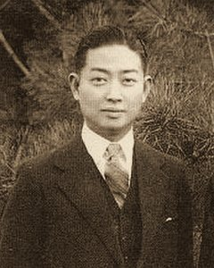
Cliché Rémi Romain
Fotografía de Rémi Romain
Mei Lanfang
19 ans · Pékin · Danse et théâtre chanté
19 años · Pekín · Danza y teatro cantado
Il tient à l'Opéra de Pékin les rôles de dame, comme son grand-père avant lui.
Ce que l'on verra. Trois scènes données chaque soir au palais de la Chine, dont L'Ivresse de la favorite : une concubine impériale attend l'empereur, qui ne vient pas, et boit seule. Tout se joue dans les manches, longues d'un mètre, dans les mains et dans le regard. Le jour, les costumes et les coiffes seront exposés sous verre.
« On me demande si je joue les femmes. Non. Je joue ce que l'on regarde quand on regarde une femme, et c'est beaucoup plus difficile. »
◆ Voir l'œuvre — Mei Lanfang dans le rôle de la favorite Yang Guifei.
Hace en la Ópera de Pekín los papeles de dama, como su abuelo antes que él.
Lo que se verá. Tres escenas que se darán cada noche en el palacio de China, entre ellas La embriaguez de la favorita: una concubina imperial espera al emperador, que no llega, y bebe sola. Todo sucede en las mangas, de un metro de largo, en las manos y en la mirada. De día, los trajes y los tocados se expondrán bajo cristal.
«Me preguntan si hago de mujer. No. Hago lo que se mira cuando se mira a una mujer, y es mucho más difícil.»
◆ Ver la obra — Mei Lanfang en el papel de la favorita Yang Guifei.
Japon
Japón
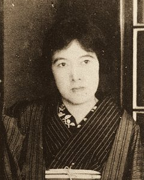
Cliché Rémi Romain
Fotografía de Rémi Romain
Yosano Akiko
35 ans · Sakai · Poésie
35 años · Sakai · Poesía
Elle connaît Paris, où elle a passé l'été de 1912. Les officiers de sa délégation n'ont pas oublié l'un de ses poèmes.
Ce que l'on verra. L'édition originale de Cheveux emmêlés (1901), près de quatre cents tankas d'amour, avec sa couverture au cœur percé d'une flèche. Le poème « Ne donne pas ta vie », écrit en 1904 à son frère soldat devant Port-Arthur, calligraphié par elle sur un rouleau. Et des tankas composés à Paris, qu'elle n'a pas encore publiés.
« Je n'ai pas écrit contre l'empereur. J'ai écrit pour mon frère. Il est revenu : le poème a donc servi. »
Conoce París, donde pasó el verano de 1912. Los oficiales de su delegación no han olvidado uno de sus poemas.
Lo que se verá. La edición original de Cabello revuelto (1901), cerca de cuatrocientos tankas de amor, con su cubierta del corazón atravesado por una flecha. El poema «No entregues tu vida», escrito en 1904 a su hermano soldado ante Port Arthur, caligrafiado por ella en un rollo. Y unos tankas compuestos en París, que aún no ha publicado.
«No escribí contra el emperador. Escribí para mi hermano. Volvió: luego el poema sirvió.»
◆ Ver la obra — Cubierta de «Cabello revuelto», Tokio, 1901.
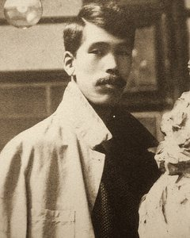
Cliché Rémi Romain
Fotografía de Rémi Romain
Takamura Kōtarō
30 ans · Tokio · Sculpture et poésie
30 años · Tokio · Escultura y poesía
Fils du tailleur de bouddhas Takamura Kōun, qui est aussi de la délégation ; revenu de Paris disciple de Rodin.
Ce que l'on verra. Un bronze, La Main : une main gauche dressée, les doigts tendus comme ceux d'un bouddha, mais modelée muscle par muscle à la manière de Meudon. Il y joint son recueil de poèmes, Le Chemin. Dans la même salle, son père montrera Le Vieux Singe, taillé dans un tronc de châtaignier.
« Mon père a sculpté toute sa vie sans avoir vu le Penseur. Moi, je l'ai vu. Nous exposerons dans la même salle et nous nous saluerons très poliment. »
◆ Voir l'œuvre — Takamura Kōtarō, « La Main », bronze.
Hijo del tallista de budas Takamura Kōun, que también va en la delegación; volvió de París discípulo de Rodin.
Lo que se verá. Un bronce, La mano: una mano izquierda alzada, con los dedos tendidos como los de un buda, pero modelada músculo a músculo a la manera de Meudon. Lo acompaña su libro de poemas, El camino. En la misma sala, su padre mostrará El mono viejo, tallado en un tronco de castaño.
«Mi padre ha esculpido toda su vida sin haber visto el Pensador. Yo lo he visto. Expondremos en la misma sala y nos saludaremos con mucha cortesía.»
◆ Ver la obra — Takamura Kōtarō, «La mano», bronce.
Empire hellénique
Imperio Heleno
Entretiens recueillis à Athènes, à Constantinople et à Paris.
Entrevistas recogidas en Atenas, en Constantinopla y en París.
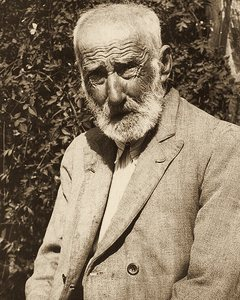
Cliché Eulalia
Fotografía de Eulalia
Yannoulis Chalepás
62 ans · Île de Tinos · Sculpture
62 años · Isla de Tinos · Escultura
Quatorze ans à l'asile de Corfou, puis berger sur son île, où sa mère brisait ce qu'il modelait. Le Conseil des Arts d'Athènes est allé le chercher ; il a peu parlé.
Ce que l'on verra. Un plâtre moulé sur sa Dormeuse de 1878, qui couvre un tombeau du Premier cimetière d'Athènes : une jeune fille étendue, la tête sur l'oreiller, une croix entre les mains. Et quelques terres modelées à Tinos, les seules que sa mère n'ait pas détruites.
« Elle dort depuis trente-six ans. Je viens voir si l'on peut la réveiller sans lui faire de mal. »
Catorce años en el manicomio de Corfú, luego pastor en su isla, donde su madre rompía cuanto modelaba. El Consejo de las Artes de Atenas ha ido a buscarlo; habló poco.
Lo que se verá. Un yeso sacado de su Durmiente de 1878, que cubre una tumba del Primer Cementerio de Atenas: una muchacha tendida, la cabeza sobre la almohada, una cruz entre las manos. Y unos barros modelados en Tinos, los únicos que su madre no destruyó.
«Duerme desde hace treinta y seis años. Vengo a ver si se la puede despertar sin hacerle daño.»
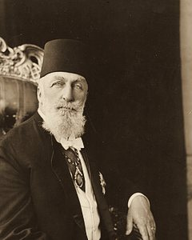
Cliché Eulalia
Fotografía de Eulalia
Abdülmecid Efendi
45 ans · Constantinople · Peinture
45 años · Constantinopla · Pintura
Prince de la maison d'Osman, peintre et pianiste, président du Conseil des Arts de Constantinople.
Ce que l'on verra. Deux grandes toiles d'intérieur. Dans Beethoven au harem, un trio, violon, violoncelle et piano, joue pour les dames du palais, sous un buste du compositeur. Dans Goethe au harem, une dame étendue sur un divan a laissé retomber son livre : c'est Faust.
« On s'étonne à Paris qu'un prince peigne. Chez nous, l'on s'étonnait qu'un peintre fût prince. L'Empire a tranché : il m'a demandé de présider. »
◆ Voir l'œuvre — Abdülmecid Efendi, « Beethoven au harem ».
Príncipe de la casa de Osmán, pintor y pianista, presidente del Consejo de las Artes de Constantinopla.
Lo que se verá. Dos grandes lienzos de interior. En Beethoven en el harén, un trío de violín, violonchelo y piano toca para las damas de palacio, bajo un busto del compositor. En Goethe en el harén, una dama tendida en un diván ha dejado caer su libro: es el Fausto.
«En París se extrañan de que un príncipe pinte. Entre nosotros se extrañaban de que un pintor fuese príncipe. El Imperio ha zanjado la cuestión: me ha pedido que presida.»
◆ Ver la obra — Abdülmecid Efendi, «Beethoven en el harén».
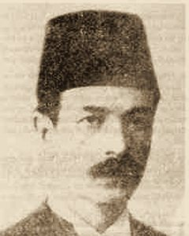
Cliché Eulalia
Fotografía de Eulalia
Tanburi Cemil Bey
40 ans · Constantinople · Musique
40 años · Constantinopla · Música
On l'appelle le musicien des derviches : les tourneurs de Galata, dit-on, ne commencent pas sans lui.
Ce que l'on verra. Rien qui s'accroche à un mur. Il jouera chaque après-midi, dans la salle de Constantinople du palais hellénique, des taksim : des improvisations dont aucune ne sera répétée. On montrera ses instruments, le tanbur à long manche, le kemençe et le lavta, et l'on pourra entendre ses disques au gramophone. Il a refusé de jouer devant l'appareil.
« Pas pour une photographie. Il faudrait que quelqu'un tourne, et vous n'en avez pas le temps. »
Lo llaman el músico de los derviches: los giradores de Gálata, dicen, no empiezan sin él.
Lo que se verá. Nada que pueda colgarse de una pared. Tocará cada tarde, en la sala de Constantinopla del palacio heleno, taksim: improvisaciones de las que ninguna se repetirá. Se mostrarán sus instrumentos, el tanbur de mástil largo, el kemençe y el lavta, y podrán oírse sus discos en el gramófono. Se negó a tocar ante la cámara.
«Para una fotografía, no. Haría falta que alguien girase, y usted no tiene tiempo.»
Cliché Eulalia
Fotografía de Eulalia
Giorgio de Chirico
25 ans · Volos, Thessalie · Peinture
25 años · Volos, Tesalia · Pintura
Né en Grèce de parents italiens, il vit à Montparnasse, où M. Apollinaire est à peu près seul à le défendre.
Ce que l'on verra. Sept toiles de l'an dernier, toutes des places de ville à l'heure où il n'y a personne. Dans La Nostalgie de l'infini, une tour à drapeaux au bout d'une esplanade et deux figures minuscules à son pied. Ailleurs, des arcades, une statue vue de dos, un train qui passe derrière un mur, et partout des ombres plus longues que l'heure ne le permet.
« Grec de naissance, Italien de sang, peintre à Paris. Il a fallu trois Conseils pour faire l'Empire. Moi, je n'ai eu qu'à naître. »
Nacido en Grecia de padres italianos, vive en Montparnasse, donde el señor Apollinaire es casi el único que lo defiende.
Lo que se verá. Siete lienzos del año pasado, todos plazas de ciudad a la hora en que no hay nadie. En La nostalgia del infinito, una torre con banderas al fondo de una explanada y dos figuras diminutas a su pie. En otros, soportales, una estatua vista de espaldas, un tren que pasa detrás de un muro, y en todas partes sombras más largas de lo que la hora permite.
«Griego de nacimiento, italiano de sangre, pintor en París. Hicieron falta tres Consejos para hacer el Imperio. A mí me bastó con nacer.»
Serbie
Serbia
Entretiens recueillis à Belgrade et à Rome.
Entrevistas recogidas en Belgrado y en Roma.
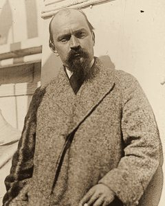
Cliché Eulalia
Fotografía de Eulalia
Ivan Meštrović
30 ans · Dalmatie · Sculpture
30 años · Dalmacia · Escultura
Sujet de l'empereur François-Joseph, il a choisi à Rome, en 1911, le pavillon de la Serbie, et il y a reçu le premier prix. M. Rodin le tient pour le premier sculpteur de sa génération.
Ce que l'on verra. Les fragments d'un temple qui n'existe pas encore, dédié aux morts de Kosovo. Une maquette de bois en donne l'ensemble. Autour, en plâtre et en marbre : une rangée de cariatides, les Veuves, des têtes de héros, et un Marko Kraljević à cheval, plus grand que nature, qui occupera à lui seul le fond de la salle.
« On me demande de quel pays je suis. Regardez mes cariatides : elles portent un toit qui n'est pas bâti. Je suis de ce toit-là. »
Súbdito del emperador Francisco José, eligió en Roma, en 1911, el pabellón de Serbia, y recibió allí el primer premio. El señor Rodin lo tiene por el primer escultor de su generación.
Lo que se verá. Los fragmentos de un templo que todavía no existe, dedicado a los muertos de Kosovo. Una maqueta de madera da el conjunto. Alrededor, en yeso y en mármol: una hilera de cariátides, las Viudas, cabezas de héroes, y un Marko Kraljević a caballo, mayor que el natural, que ocupará él solo el fondo de la sala.
«Me preguntan de qué país soy. Miren mis cariátides: sostienen un techo que no está construido. Yo soy de ese techo.»
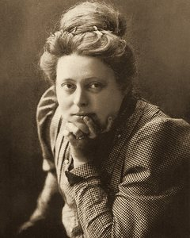
Cliché Eulalia
Fotografía de Eulalia
Nadežda Petrović
40 ans · Čačak · Peinture
40 años · Čačak · Pintura
Elle a exposé au Salon d'Automne en 1910. Infirmière volontaire pendant les combats de Macédoine, décorée.
Ce que l'on verra. Deux toiles peintes l'an dernier. Dans Pivoines de Kosovo, un champ de fleurs rouges monte jusqu'au monastère de Gračanica, sous des collines vertes et un ciel remué. La seconde montre le monastère seul. Elle y joint des études faites au camp, entre deux services d'ambulance.
« J'ai soigné le typhus et le choléra. Le rouge de mes pivoines, je sais d'où il vient. Je préfère qu'il reste sur la toile. »
◆ Voir l'œuvre — Nadežda Petrović, « Pivoines de Kosovo (Gračanica) », 1913.
Expuso en el Salón de Otoño en 1910. Enfermera voluntaria durante los combates de Macedonia, condecorada.
Lo que se verá. Dos lienzos pintados el año pasado. En Peonías de Kosovo, un campo de flores rojas sube hasta el monasterio de Gračanica, bajo unas colinas verdes y un cielo agitado. El segundo muestra el monasterio solo. Añade unos estudios hechos en el campamento, entre dos turnos de ambulancia.
«He cuidado el tifus y el cólera. El rojo de mis peonías, sé de dónde viene. Prefiero que se quede en el lienzo.»
◆ Ver la obra — Nadežda Petrović, «Peonías de Kosovo (Gračanica)», 1913.
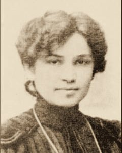
Cliché Eulalia
Fotografía de Eulalia
Jelisaveta Načić
35 ans · Belgrade · Architecture
35 años · Belgrado · Arquitectura
Première femme architecte de Serbie, employée de la ville de Belgrade.
Ce que l'on verra. Le palais de la Serbie lui-même, qu'elle élève au bord de la Seine : c'est là que seront montrés le temple de M. Meštrović et les toiles de Mlle Petrović. Le commissariat serbe lui demandait un arc de triomphe, comme celui qu'elle a dressé l'an dernier à Belgrade pour le retour des troupes de Macédoine. Elle a dessiné une cour fermée, de brique et de pierre blanche, sur le plan de son école du Roi-Pierre, avec une salle haute au fond.
« J'ai bâti une école, des logements et un arc de triomphe. On ne m'a écrit de Paris que pour l'arc. J'ai dessiné une cour, avec une porte assez haute pour le cheval de M. Meštrović. »
Primera arquitecta de Serbia, empleada del ayuntamiento de Belgrado.
Lo que se verá. El propio palacio de Serbia, que levanta a orillas del Sena: allí se mostrarán el templo del señor Meštrović y los lienzos de la señorita Petrović. El comisariado serbio le pedía un arco de triunfo, como el que alzó el año pasado en Belgrado para el regreso de las tropas de Macedonia. Ella ha dibujado un patio cerrado, de ladrillo y piedra blanca, sobre la planta de su escuela del Rey Pedro, con una sala alta al fondo.
«He construido una escuela, unas viviendas y un arco de triunfo. De París sólo me escribieron por el arco. He dibujado un patio, con una puerta lo bastante alta para el caballo del señor Meštrović.»
Suède
Suecia
Entretiens recueillis à Stockholm et à Sundborn, en Dalécarlie.
Entrevistas recogidas en Estocolmo y en Sundborn, en Dalecarlia.
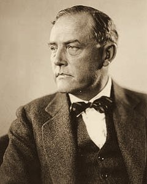
Cliché Eulalia
Fotografía de Eulalia
Victor Sjöström
34 ans · Värmland · Cinématographe
34 años · Värmland · Cinematógrafo
Acteur de théâtre passé derrière l'appareil.
Ce que l'on verra.Ingeborg Holm (1913), projeté en entier, deux fois par jour : soixante-dix minutes. Une veuve ruinée entre à l'hospice ; l'assistance publique lui retire ses enfants et les place chez des étrangers ; quand on lui en ramène un, des années plus tard, il ne la reconnaît pas. Le film a obligé le Parlement suédois à rouvrir le débat sur la loi des pauvres.
« Un film a fait discuter une loi chez nous. Je ne sais pas si un film peut faire reculer une flotte. On m'envoie à Paris pour l'apprendre. »
Actor de teatro que se ha pasado detrás de la cámara.
Lo que se verá.Ingeborg Holm (1913), proyectada entera, dos veces al día: setenta minutos. Una viuda arruinada entra en el asilo; la beneficencia le quita a sus hijos y los coloca en casas ajenas; cuando le traen a uno, años después, no la reconoce. La película obligó al Parlamento sueco a reabrir el debate sobre la ley de pobres.
«Una película ha hecho discutir una ley en nuestro país. No sé si una película puede hacer retroceder a una flota. Me envían a París para averiguarlo.»
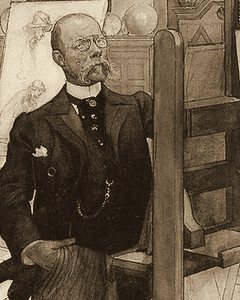
Portrait dessiné
Retrato a dibujo
Carl Larsson
60 ans · Sundborn, Dalécarlie · Peinture
60 años · Sundborn, Dalecarlia · Pintura
La Suède le connaît pour ses aquarelles de famille. Ce n'est pas elles qu'il envoie.
Ce que l'on verra. Une seule toile, de quatorze mètres sur six et demi : Le Sacrifice du solstice d'hiver. Devant le temple d'Upsal, le roi Domalde, nu, s'offre au couteau du sacrificateur pour que la famine cesse ; son peuple regarde, les trompes sonnent. Le Musée national de Stockholm, pour lequel elle fut peinte, la refuse. Elle voyagera roulée.
« On me dit que le sujet est barbare et qu'il n'est plus de notre temps. Je voudrais de tout cœur que le Musée eût raison. »
◆ Voir l'œuvre — Carl Larsson, « Le Sacrifice du solstice d'hiver » (Midvinterblot).
Suecia lo conoce por sus acuarelas de familia. No son ellas lo que envía.
Lo que se verá. Un solo lienzo, de catorce metros por seis y medio: El sacrificio del solsticio de invierno. Ante el templo de Upsala, el rey Domalde, desnudo, se ofrece al cuchillo del sacrificador para que cese el hambre; su pueblo mira, suenan las trompas. El Museo Nacional de Estocolmo, para el que fue pintado, lo rechaza. Viajará enrollado.
«Me dicen que el asunto es bárbaro y que ya no es de nuestro tiempo. Quisiera de todo corazón que el Museo tuviese razón.»
◆ Ver la obra — Carl Larsson, «El sacrificio del solsticio de invierno» (Midvinterblot).
Espagne
España
Entretien recueilli à Séville.
Entrevista recogida en Sevilla.
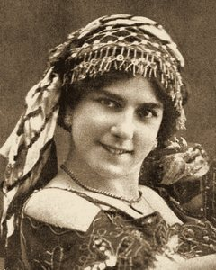
Cliché Eulalia
Fotografía de Eulalia
Pastora Imperio
26 ans · Séville, Triana · Danse
26 años · Sevilla, Triana · Danza
Gitane de Triana, la danseuse la plus célèbre d'Espagne. Paris ne l'a jamais vue.
Ce que l'on verra. Chaque soir, au palais de l'Espagne, la danse du feu que M. Manuel de Falla écrit pour elle : une gitane tourne autour d'un brasier, à minuit, pour chasser le spectre d'un amant mort qui ne la laisse pas aimer. Avant et après, des soleares et des alegrías, avec deux guitares et les palmas de sa famille. Le jour, on verra ses robes à traîne et ses châles.
« M. de Falla écrit la musique en me regardant danser. Il dit qu'il compose. Moi, je dis qu'il copie. »
Gitana de Triana, la bailaora más célebre de España. París no la ha visto nunca.
Lo que se verá. Cada noche, en el palacio de España, la danza del fuego que el señor Manuel de Falla escribe para ella: una gitana gira alrededor de una hoguera, a medianoche, para ahuyentar al espectro de un amante muerto que no la deja querer. Antes y después, soleares y alegrías, con dos guitarras y las palmas de su familia. De día se verán sus batas de cola y sus mantones.
«El señor de Falla escribe la música mirándome bailar. Él dice que compone. Yo digo que copia.»
Sous le pavillon de la Russie
Bajo el pabellón de Rusia
M. Saarinen a reçu l'auteur en Finlande, en présence d'un fonctionnaire du gouvernement général, qui a bien voulu relire ses notes.
El señor Saarinen recibió a la autora en Finlandia, en presencia de un funcionario del gobierno general, que tuvo a bien revisar sus notas.
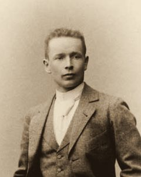
Cliché Eulalia
Fotografía de Eulalia
Eliel Saarinen
40 ans · Finlande · Architecture
40 años · Finlandia · Arquitectura
Finlandais, inscrit sur la liste russe ; architecte de la gare centrale d'Helsingfors, qui s'achève cette année.
Ce que l'on verra. Un bâtiment, et non des plans : l'aile du palais de la Russie où sera logée la musique. Une halle voûtée de granit rose, flanquée d'une tour d'horloge, sur le modèle de sa gare. De part et d'autre de la porte, deux géants de pierre tiendront chacun une lampe ; ils sont du sculpteur Emil Wikström. À l'intérieur, une salle de concert de six cents places et les vitrines des partitions.
« Mes géants portent des lampes. On me demande souvent pour qui ils éclairent. Pour ceux qui entrent : c'est une porte. »
Finlandés, inscrito en la lista rusa; arquitecto de la estación central de Helsingfors, que se termina este año.
Lo que se verá. Un edificio, y no unos planos: el ala del palacio de Rusia donde se alojará la música. Una nave abovedada de granito rosa, flanqueada por una torre de reloj, según el modelo de su estación. A cada lado de la puerta, dos gigantes de piedra sostendrán cada uno una lámpara; son del escultor Emil Wikström. Dentro, una sala de conciertos de seiscientas plazas y las vitrinas de las partituras.
«Mis gigantes sostienen lámparas. Me preguntan a menudo para quién alumbran. Para los que entran: es una puerta.»
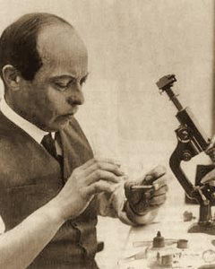
Cliché Rémi Romain
Fotografía de Rémi Romain
Władysław Starewicz
31 ans · Moscou · Cinématographe
31 años · Moscú · Cinematógrafo
Polonais de Lituanie né à Moscou, entomologiste avant d'être cinéaste. Le tsar l'a décoré.
Ce que l'on verra. Deux films joués par des insectes naturalisés, qu'il déplace d'un cheveu entre deux images. Dans La Vengeance de l'opérateur (1912), un scarabée trompe sa femme et se voit dénoncé à l'écran par une sauterelle qui l'a filmé par le trou de la serrure. La Cigale et la Fourmi (1913) suit la fable. Les acteurs seront exposés sous verre, avec leurs pattes de fil de fer.
« Vivants, les scarabées ne supportent pas les projecteurs. Morts, ils font tout ce qu'on leur demande. C'est une méthode que je n'applique qu'aux insectes. »
◆ Voir l'œuvre — « La Vengeance de l'opérateur », 1912 : le peintre et la libellule.
Polaco de Lituania nacido en Moscú, entomólogo antes que cineasta. El zar lo ha condecorado.
Lo que se verá. Dos películas interpretadas por insectos disecados, que mueve un pelo entre dos fotogramas. En La venganza del camarógrafo (1912), un escarabajo engaña a su mujer y se ve denunciado en la pantalla por un saltamontes que lo ha filmado por el ojo de la cerradura. La cigarra y la hormiga (1913) sigue la fábula. Los actores se expondrán bajo cristal, con sus patas de alambre.
«Vivos, los escarabajos no soportan los focos. Muertos, hacen todo lo que se les pide. Es un método que sólo aplico a los insectos.»
◆ Ver la obra — «La venganza del camarógrafo», 1912: el pintor y la libélula.
Royaume-Uni
Reino Unido
Entretien recueilli à Londres.
Entrevista recogida en Londres.
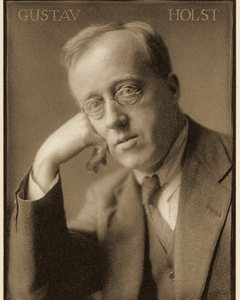
Cliché Eulalia
Fotografía de Eulalia
Gustav Holst
39 ans · Cheltenham · Musique
39 años · Cheltenham · Música
Professeur de musique dans une école de jeunes filles ; il lit le sanscrit et dresse des horoscopes pour ses amis.
Ce que l'on verra. Une seule pièce pour grand orchestre, premier morceau d'une suite qu'il n'a pas écrite : Mars, celui qui apporte la guerre. Sept minutes à cinq temps, sur un rythme que les cordes frappent du bois de l'archet et qui ne s'arrête pas. La partition sera exposée dans l'une des salles du palais britannique et l'œuvre y sera jouée deux fois par semaine.
« Je n'ai pas inventé ce rythme. Il était déjà là ; je l'ai seulement noté. J'aimerais savoir d'où il vient avant qu'on le joue à Paris. »
Profesor de música en un colegio de señoritas; lee sánscrito y hace horóscopos a sus amigos.
Lo que se verá. Una sola pieza para gran orquesta, primer número de una suite que no ha escrito: Marte, el portador de la guerra. Siete minutos en compás de cinco tiempos, sobre un ritmo que las cuerdas golpean con la madera del arco y que no se detiene. La partitura se expondrá en una de las salas del palacio británico y la obra se tocará allí dos veces por semana.
«Yo no he inventado ese ritmo. Ya estaba ahí; sólo lo he anotado. Me gustaría saber de dónde viene antes de que se toque en París.»